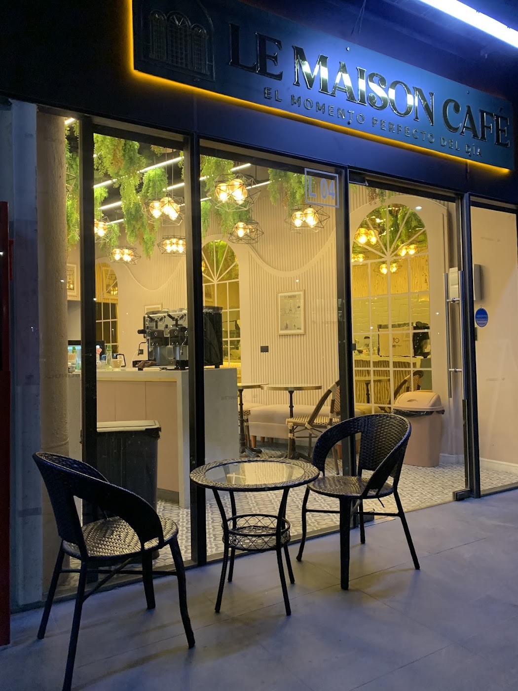
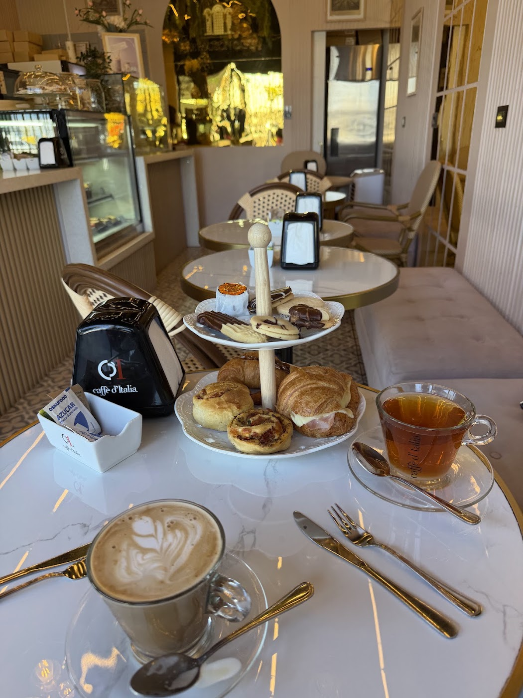
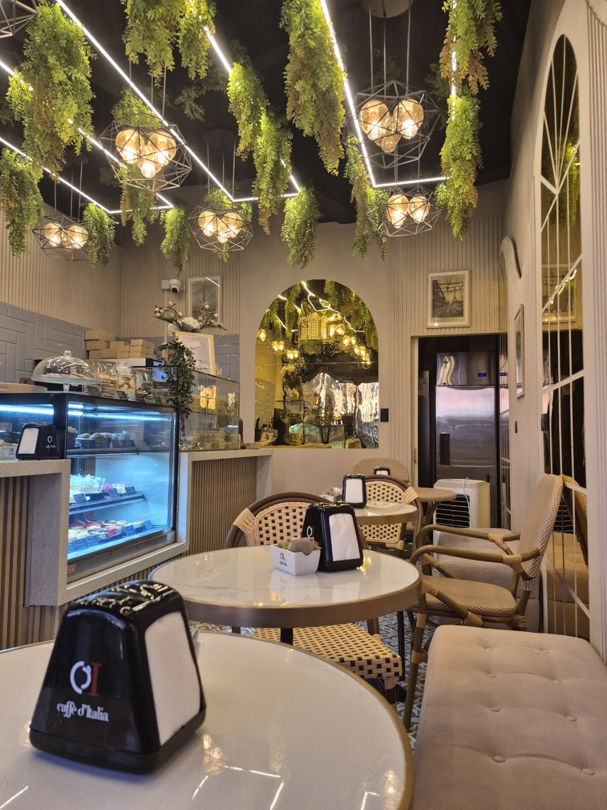
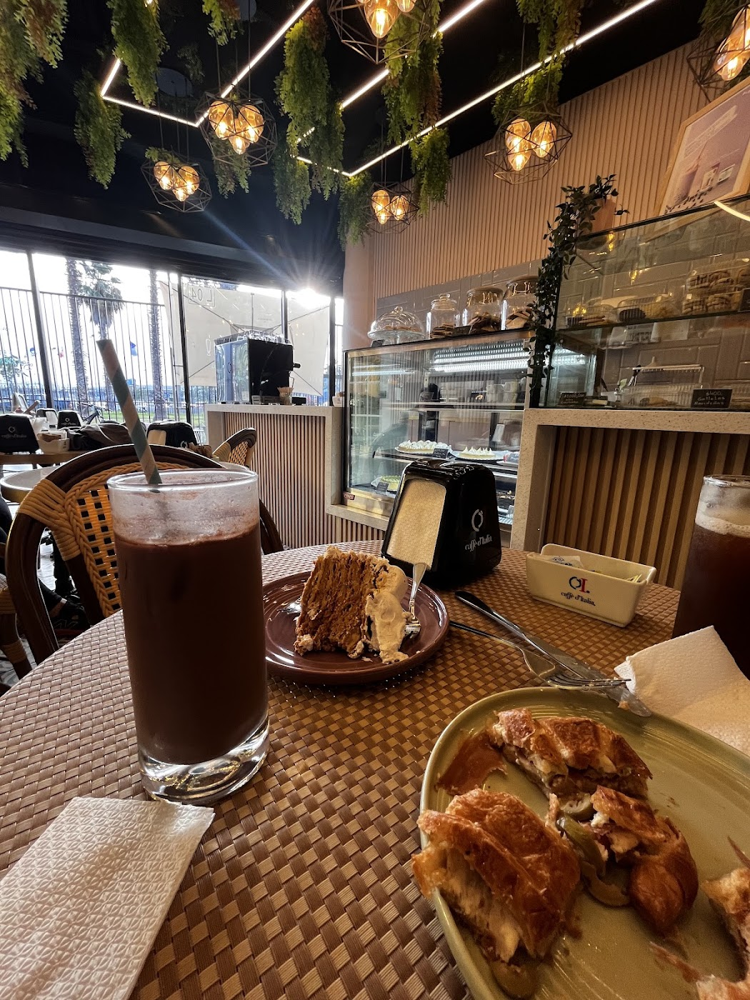
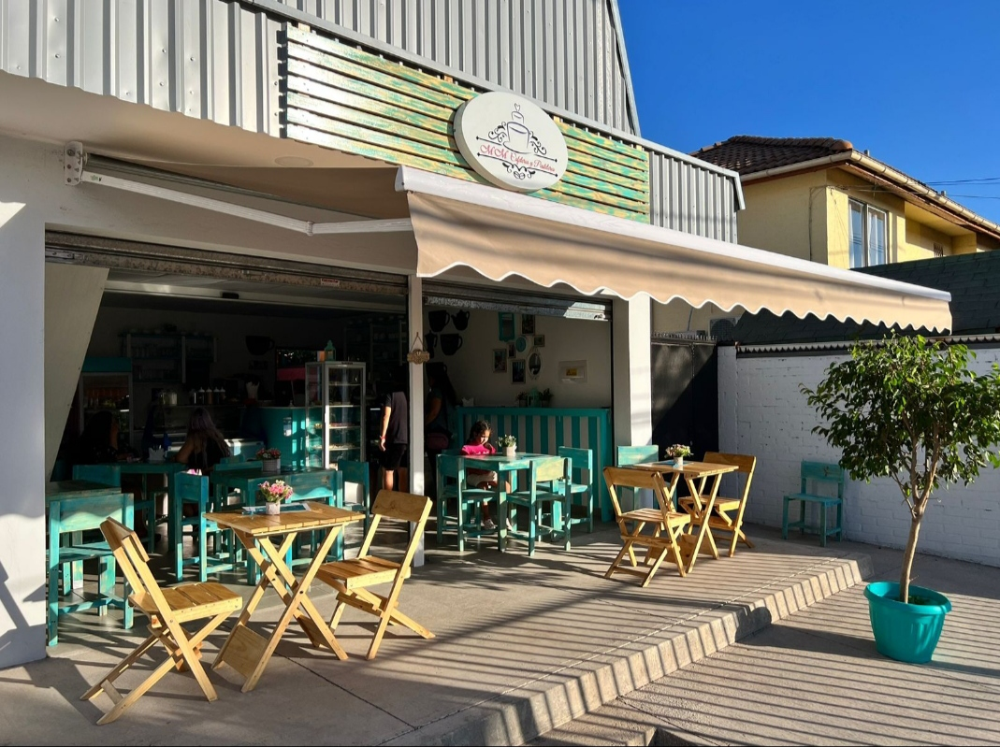

Café de barra
Máquina a la vista y molino propio, justo al entrar. El café se prepara delante tuyo.

Cafetería · Stripcenter NeoPajaritos · Maipú
Arcos, plantas colgantes y lámparas de latón en Av. Los Pajaritos 4500b. Para quedarse, para llevar, o para que te lo lleven.
Máquina a la vista y molino propio, justo al entrar. El café se prepara delante tuyo.
Arcos, espejos, plantas colgantes y sillas de bistró: está pensado para sentarse un rato, no para el paso rápido.
Consumo en el lugar, para llevar y entrega a domicilio.
Le Maison Café está en el local 4 del Stripcenter NeoPajaritos, en Av. Los Pajaritos 4500b. Por fuera es una vitrina más; por dentro, un salón con arcos, espejos y plantas colgando del techo.
Su propio letrero lo dice: "el momento perfecto del día". Con 4.7 estrellas y 55 opiniones en Google, es de las cafeterías mejor evaluadas del sector.




Arma tu pedido y consúltanos. Según el dato que Google recoge de 35 clientes, el gasto promedio va entre $5.000 y $10.000 por persona.
★★★★★
“Excelente cafetería, un lugar muy acogedor y con una atención realmente destacable. El ambiente es tranquilo, ideal para conversar o trabajar un rato con un buen café. Los productos son frescos y se nota la calidad, especialmente el café, que tiene muy buen sabor y aroma.”
★★★★★
“Es una cafetería chiquita, pero con detalles bonitos. Lo que me gustó mucho fue el sabor del Chai Latte.”
★★★★★
“Quedé sorprendida por lo linda y acogedora. La atención es muy amable y la comida estaba muy buena. Las porciones son grandes. Desde ahora es uno de mis lugares favoritos de Maipú.”
★★★★★
“Ya se nos hizo costumbre venir con mi señora. Productos de primera, buen café y una atención rápida y personalizada. Ricos pastelitos, tortas y galletitas a muy buen precio.”
Es nuestro promedio real, con 55 opiniones en Google. Si ya pasaste por Le Maison, tu opinión suma.
Dejar una reseña en GoogleAv. Los Pajaritos 4500b, local 4
Stripcenter NeoPajaritos · Maipú
—